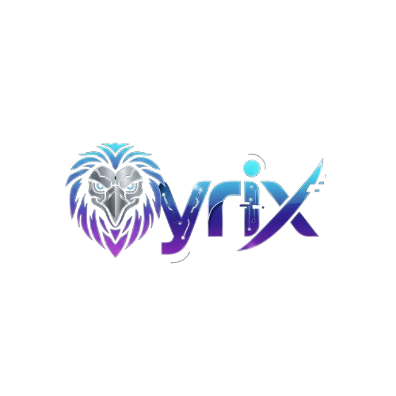

Grok API: Low-latency AI streaming for fast intelligent responses.
ChatGPT Model (openai/gpt-oss-20b): Conversational AI capable of understanding complex queries and generating human-like responses.
Qyrix combines these technologies to assist users in real-time, providing research, guidance, creative solutions, and friendly support with a polite, gentle, human-like personality.
